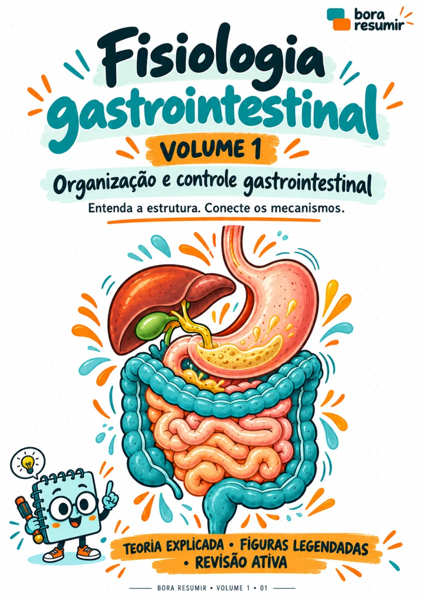
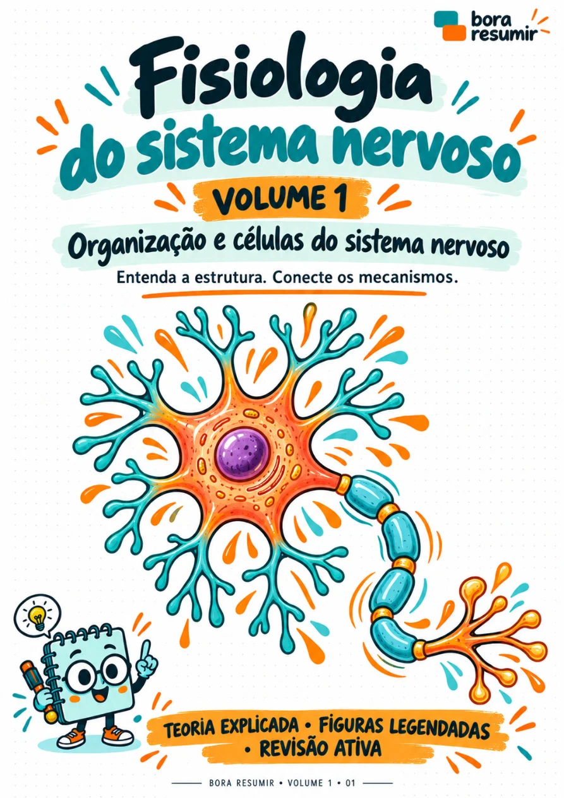
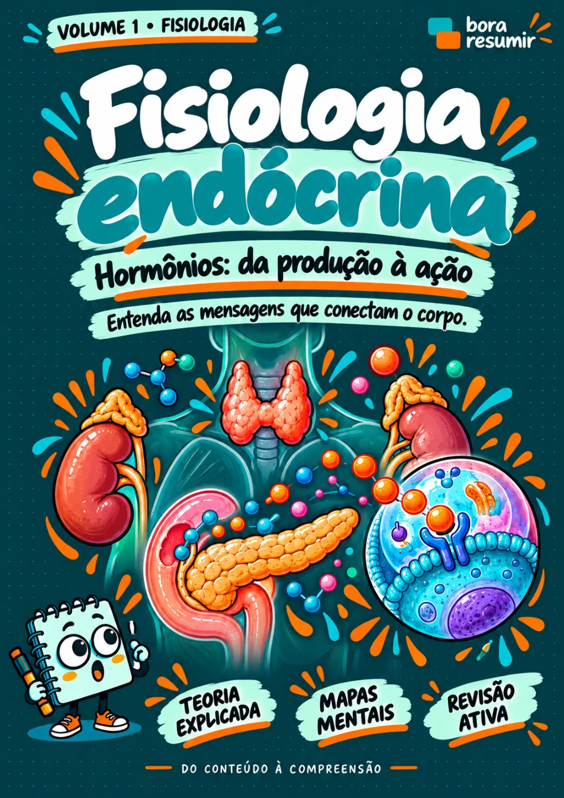
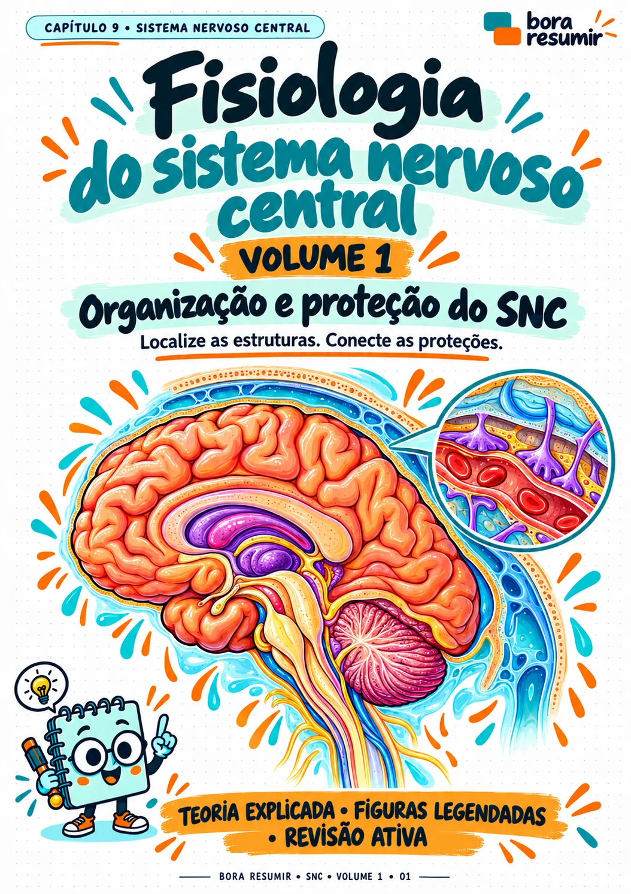

EXEMPLO FICTÍCIO
Modelo de comentário 01
“Curti a ideia de ver a explicação e a ilustração juntas. Fica mais fácil acompanhar o assunto.”
Foto ilustrativa · Texto fictício
RESUMOS PARA A ÁREA DA SAÚDE
Resumos ilustrados, mapas mentais e revisão ativa para quem estuda na área da saúde.
Quero meu material
Gastrointestinal
Neurofisiologia
Endócrina
Sistema nervoso centralMaterial digital • Acesso por coleção • Estude no seu ritmo
MATERIAIS DISPONÍVEIS EM PDF
Comece pelas coleções de fisiologia e explore os volumes por dentro.
Material digital em PDF • Português
Cada coleção é adquirida separadamente. Confira os materiais incluídos na oferta.
ABRA UM LIVRO. DÊ UMA ESPIADA.
Escolha o livro e passe as páginas. São prévias reais do Volume 1 de cada coleção.
Prévia do volume indicado. Confira a composição completa na oferta da coleção.
DEMONSTRAÇÃO DO LAYOUT
Textos fictícios para visualizar a seção. As fotos são ilustrativas e não representam avaliações reais dessas pessoas.
Modelo de comentário 01
“Curti a ideia de ver a explicação e a ilustração juntas. Fica mais fácil acompanhar o assunto.”
Foto ilustrativa · Texto fictício
Modelo de comentário 02
“Pra mim, o mapa é aquele momento de juntar as peças depois de ler o resumo.”
Foto ilustrativa · Texto fictício
Modelo de comentário 03
“Gostei de ter perguntas no final. Dá pra perceber o que eu lembro e o que preciso rever.”
Foto ilustrativa · Texto fictício
Modelo de comentário 04
“Quando o texto vem dividido em blocos, consigo organizar melhor a revisão.”
Foto ilustrativa · Texto fictício
Modelo de comentário 05
“A proposta de fechar o material e tentar responder com minhas palavras faz sentido pra mim.”
Foto ilustrativa · Texto fictício
Modelo de comentário 06
“Achei legal poder olhar as páginas antes e entender como o material é organizado.”
Foto ilustrativa · Texto fictício
Modelo de comentário 07
“Os desenhos chamam atenção, mas o que me interessa é ver a relação entre as ideias.”
Foto ilustrativa · Texto fictício
Modelo de comentário 08
“Resumo, mapa e revisão: gosto dessa sequência pra retomar um assunto.”
Foto ilustrativa · Texto fictício
Deslize para ver os outros exemplos →
SEM COMPLICAÇÃO
Digital, em PDF. Você pode ler no celular, tablet ou computador e imprimir para uso pessoal.
Os conteúdos variam por coleção. Abra o material desejado para ver os temas e os volumes. A oferta de Sistema Nervoso Central corresponde ao Volume 1.
Na oferta de cada produto, antes de finalizar o pedido. Confira o valor, o prazo de acesso e as condições de reembolso.
O Bora Resumir está crescendo: farmacologia e patologia estão nos próximos conteúdos. Os lançamentos serão apresentados em ofertas próprias.